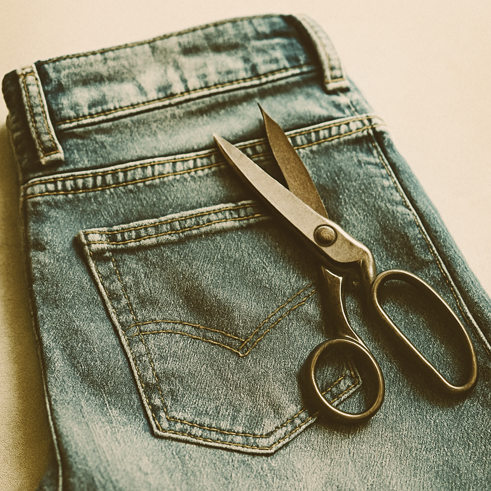
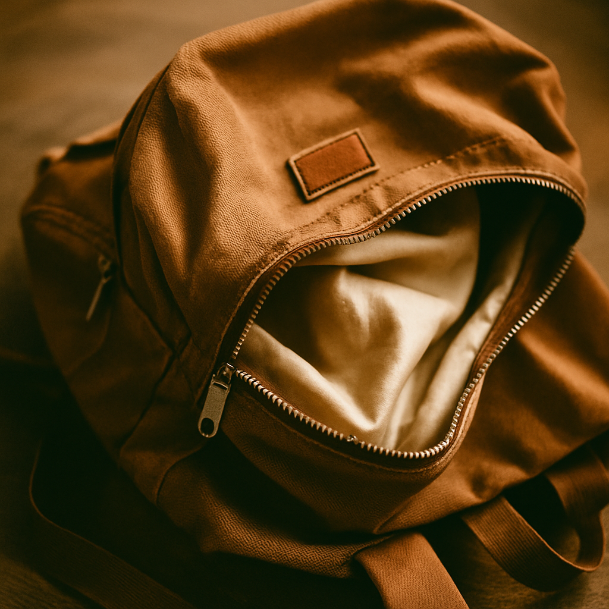
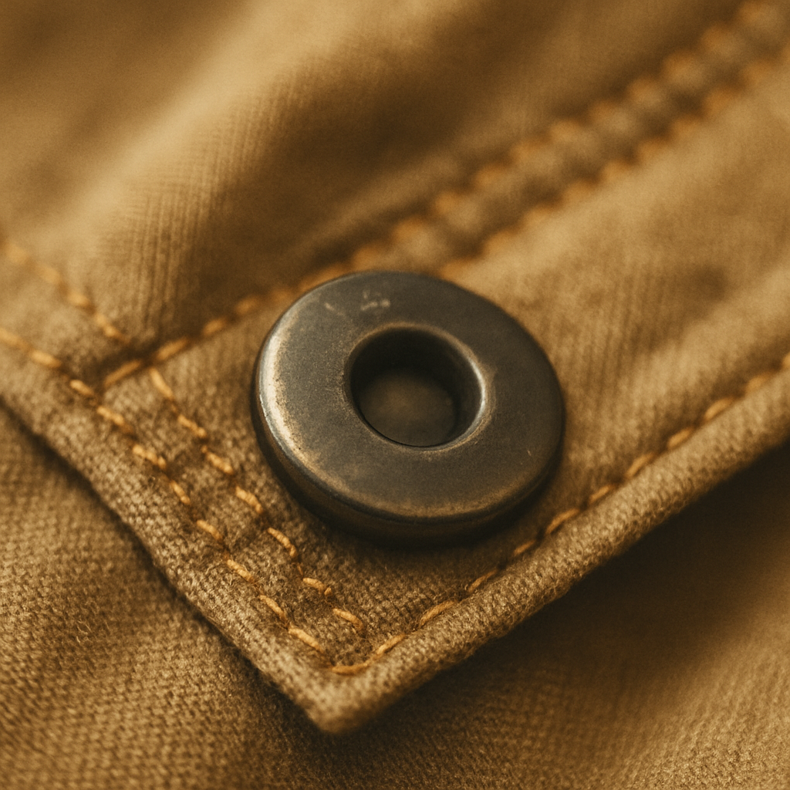

Krejčovství Švadlenka
Kvalitní opravna oděvů pod Nuselským mostem
Rádi vás přivítáme na adrese Jaromírova 726/15:
| Po - Čt: | 10:00 - 18:00 |
| Pátek: | 10:00 - 16:00 |
Naše služby

Úprava džín
Zkracujeme, zužujeme nebo opravujeme prošoupané a potrhané džíny
Látkové oděvy
Nabízíme úpravy velikostí, vyštíhlení oblečení nebo přišití zipu

Oprava batohu a kabelek
Zpevnění popruhů, výměna zipů nebo oprava trhlin v materiálu
Závěsy a záclony
Úpravy záclon a závěsů na míru — zkracování, začištění okrajů a úprava tunýlků pro zavěšení
Výměna podšívky
Vyměňujeme opotřebované nebo poškozené podšívky v kabátech a bundách

Výměna druku
Rychlá výměna kovových patentek na bundách, kalhotách či doplňcích
Kontakty